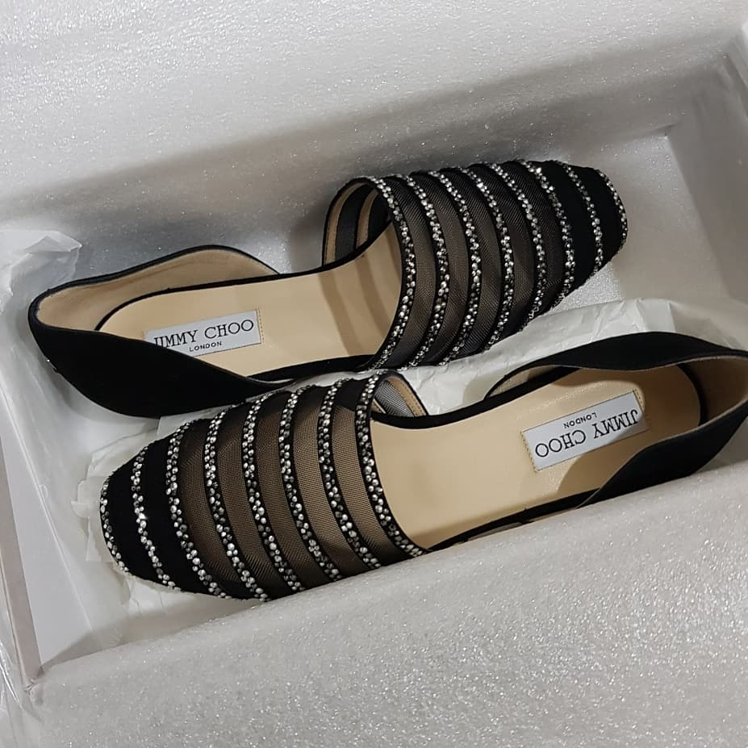
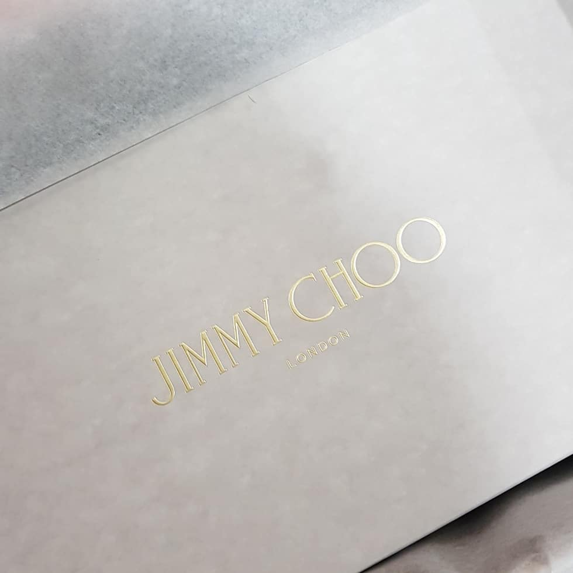
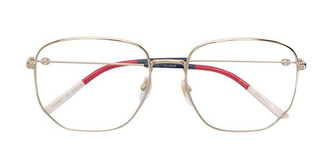
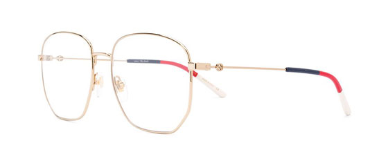
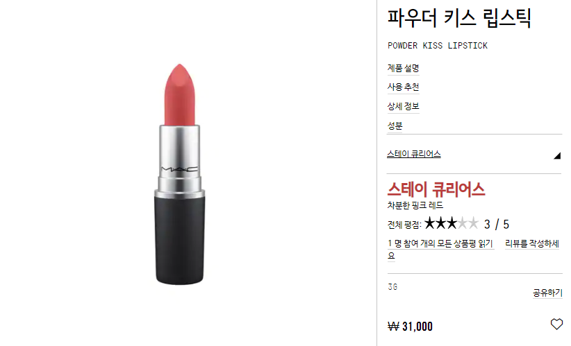
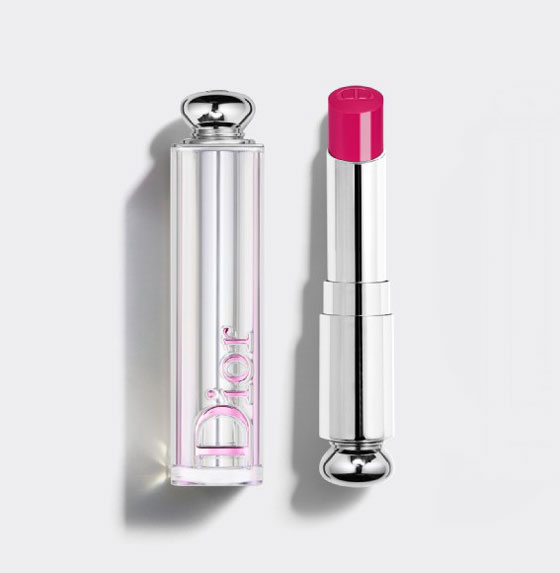

안녕하세요
여전히 반짝이 슈즈와 아이웨어에 미쳐있는 사람입니다.
제가 3월 쇼핑리스트를 적으면서 반성한다-라는 헛소리를 했었나요? ㅋㅋㅋㅋㅋㅋㅋㅋ
4월의 구매리스트 적어봅니다 ㅋㅋㅋㅋㅋ
시작은 지난 면세점 쇼핑 때 지미추에서 파랑 반짝이 플랫슈즈 맘에드는걸 하나 발견했었습니다.
지미추/마놀로블라닉/루부탱 등등 여성구두로 유명한 브랜드는 - 킬힐에 앞코가 뾰족한 디자인 - 이란 생각에 관심없었는데 이르케 또 맘에드는게 생기네용.
예전에는 구두 앞코 뾰족한거 안좋아했었는데 이제는 예뻐보여용
역쉬 나이들면서 취향도 변해 ㅋㅋㅋ

지미추 글로브 플랫
생각날때마다 웹서핑 하면서 구경하고 있었는데 (검색은 숨쉬듯이)
24sevres 사이트에서 제사이즈 딱 하나 남아있는 요 신발을 발견했습니다.
헐 이건 사야해!!
검색하다 걸린 웹사이트인데 프랑스 봉마르쉐 백화점 온라인 사이트라고 하는군욤.
결제할때 관세까지 같이 지불하면 되고
세일가격 + 20% 추가 할인 프로모션에 무료배송으로 뿌듯한 구매였어요.
월욜일 오전에 주문해서 수요일 오후에 받아보았습니다;;; 프랑스에서 날라오는건데;;; 뭔 한국택배여;; DHL 너무 빨라;; 무서워;;;;
사이트 안내에도 자기 원래 사이즈 구매하라고 했고(미우미우 발레리나 플랫의 경우 반사이즈 크게 구매 하는게 정답)
매장에서 파랑 반짝이 플랫 신었을 때도 내 사이즈 구매하면 되겠거니 싶었는데
요 깜장은 막상 받아보니 살짝 커요 ;ㅂ; 미묘하게 헐렁합니다;; 해서 또다시 얘를 반품해야하나 고민하다가 인터넷 검색을 해 보았더니 신발 패드로 어느정도 잡아줄 수 있다는 글을 읽고 바로 수선집으로 직행.
투명한 실리콘 재질의 쿠션을 앞에 부착하니 딱맞습니다. 너무 신기하네요;;
검색해보니
뒤꿈치 패드도 있고 종류가 다양한데 전 신발 앞쪽 바닥에 붙이는 패드 한장으로 해결되었습니다.
그리고 나의 새 신발에 대한 동생곰의 감상:
드릴이냐? 벽도 뚫겠어~
ㅋㅋㅋㅋㅋㅋㅋㅋㅋ 이생키 ㅋㅋㅋㅋㅋㅋㅋㅋㅋㅋ

아핳핳 뿌듯하다! 잘샀다!
그리고 신발 엄청 가볍네요 ;ㅂ; 마음에 듭니다.


원래 마음에 든건 파페치에서 본 뿔테스타일 이었으나 프레임 사이즈가 50이라 나에게 안 어울릴거 같아서;;
또다시 안경점을 헤매다가 발견한 다른 모델 :D
그래 전에 동그란거 샀으니 이번엔 각진거 사야져 (←;;;;;;)
원래 한참 빅백사다가 또다시 미니백에 관심갖고 그런 로테이숑이 있는거 아니겠습니까
구찌 브랜드 자체에 관심이 별 없었는데 악세서리랑 안경 마음에 드는게 많네요.
전에 구입한 빨강 반짝이(....) 선글도 그르쿠//구찌 이집 안경 잘하네~ :D :D
......위시리스트는 끝나지 않아요;;;


그 외에는
맥 파우더 키스 립스틱: 스테이큐리어스
디올 어딕트 스텔라 샤인: 667 핑크메테오
(할인과 쿠폰을 주길래 주문해본.....)
라네즈 시카 슬리핑 마스크 / 립 마스크
한율 수분 진정수 / 클렌징 오일
등등을 구매하며 즐거워 했습니다.
쇼핑의 이유는 세일해서 가 큰 지분을 차지하는 거 같아요 :p
파우더 키스 립스틱 / 스텔라 샤인 둘다 텍스쳐는 매우 훌륭하나
색상자체는 평범합니다 :p
디올의 경우 거울안보고 슥슥바르는 색있는 립밤으로 사용할 듯 싶네용 :)
.................고만사야지;;;